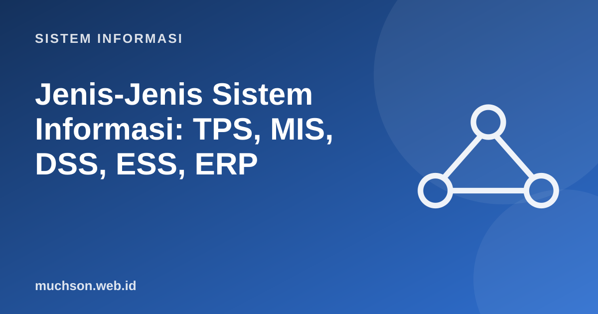

Beranda › Artikel › Sistem Informasi
Sistem InformasiJenis-Jenis Sistem Informasi: TPS, MIS, DSS, ESS, ERP
Organisasi tidak memakai satu sistem untuk segalanya. Kasir, manajer cabang, dan direktur membutuhkan informasi yang sangat berbeda. Klasifikasi klasik membagi sistem informasi menurut tingkat pemakai dan jenis keputusan yang didukungnya.
Sebaiknya sudah paham: konsep dasar sistem informasi

Tujuan belajar
Setelah membaca dan mencoba materi ini, Anda mampu:
- membedakan TPS, MIS, DSS, dan ESS berdasarkan pengguna, data, dan keputusan
- menjelaskan fungsi ERP, CRM, dan SCM sebagai sistem lintas fungsi
- mengklasifikasikan contoh sistem nyata ke jenis yang tepat
- menjelaskan bagaimana sistem-sistem tersebut saling memberi data
Empat tingkat klasik
| Jenis | Pengguna | Masukan | Keluaran | Contoh |
|---|---|---|---|---|
| TPS | Staf operasional | Transaksi | Catatan transaksi, struk, daftar | Kasir toko, pencatatan KRS, ATM, reservasi tiket |
| MIS | Manajer menengah | Ringkasan dari TPS | Laporan rutin dan pengecualian | Laporan penjualan bulanan per cabang |
| DSS | Manajer, analis | Data internal dan eksternal, model | Analisis, simulasi, rekomendasi | Model penentuan harga, penjadwalan produksi |
| ESS | Eksekutif | Data internal dan eksternal terangkum | Dasbor dan tren strategis | Dasbor kinerja perusahaan, indikator pasar |
Sistem lintas fungsi
| Sistem | Tujuan | Cakupan | Contoh modul |
|---|---|---|---|
| ERP (Enterprise Resource Planning) | Mengintegrasikan proses inti organisasi pada satu basis data bersama | Keuangan, SDM, produksi, penjualan, pembelian, persediaan | SAP S/4HANA, Odoo, Oracle NetSuite, Microsoft Dynamics |
| CRM (Customer Relationship Management) | Mengelola hubungan dan riwayat pelanggan | Penjualan, pemasaran, layanan pelanggan | Salesforce, HubSpot |
| SCM (Supply Chain Management) | Mengelola aliran bahan, informasi, dan uang dari pemasok sampai pelanggan | Pengadaan, gudang, distribusi | Perencanaan permintaan, pelacakan pengiriman |
| KMS (Knowledge Management System) | Menangkap dan berbagi pengetahuan organisasi | Seluruh organisasi | Wiki internal, repositori dokumen |
Mengapa ERP
Nilai ERP terletak pada satu sumber data: ketika gudang mencatat barang keluar, bagian keuangan langsung melihat piutang dan bagian produksi melihat sisa stok. Tanpa integrasi, setiap bagian memelihara datanya sendiri dan angkanya jarang cocok.
Contoh aliran data: toko online
Klasifikasi lain yang perlu dikenal
- Menurut fungsi bisnis: SI akuntansi, SI sumber daya manusia, SI pemasaran, SI produksi.
- Menurut cakupan: SI departemen, SI perusahaan, SI antar-organisasi (EDI, pertukaran data pemasok–pelanggan).
- Sistem pakar dan AI: meniru penalaran pakar (diagnosis, rekomendasi); kini banyak dibangun dengan pembelajaran mesin.
- Business intelligence: analitik dan dasbor di atas gudang data (lihat materi BI).
Latihan mandiriCoba kerjakan dulu sebelum membuka jawaban.
1. Klasifikasikan: (a) sistem ATM, (b) dasbor kinerja rektor, (c) simulasi penetapan UKT, (d) laporan IPK per angkatan.
(a) TPS, (b) ESS, (c) DSS, (d) MIS.
2. Mengapa data TPS yang salah merusak MIS dan ESS?
Informasi tingkat atas dibangun dari ringkasan data transaksi sehingga kesalahan merambat.
3. Sebutkan satu risiko implementasi ERP.
Biaya dan waktu besar, resistensi pengguna, kustomisasi berlebihan, kualitas data migrasi yang buruk.
4. Beri contoh CRM pada kampus.
Pencatatan calon mahasiswa, riwayat komunikasi, dan pelacakan alumni.
Ringkasan
- TPS mencatat transaksi; MIS meringkas; DSS menganalisis; ESS mendukung keputusan strategis.
- Keputusan terstruktur, semi-terstruktur, dan tidak terstruktur didukung sistem berbeda.
- ERP, CRM, dan SCM mengintegrasikan proses lintas fungsi.
- Kualitas data TPS menentukan kualitas seluruh tingkat di atasnya.
Tanya jawab
Apakah klasifikasi ini masih relevan?
Sebagai kerangka berpikir ya. Praktiknya batasnya kabur: platform analitik modern menggabungkan fungsi MIS, DSS, dan ESS dalam satu dasbor.
Apa beda ERP dan SI akuntansi?
Akuntansi hanya satu modul; ERP mencakup banyak fungsi dengan basis data bersama.
Apakah UMKM perlu ERP?
Tidak selalu. Mulailah dengan aplikasi kasir dan akuntansi sederhana; ERP ringan seperti Odoo dapat dipertimbangkan saat proses mulai rumit.
Referensi
- Kenneth C. Laudon dan Jane P. Laudon, Management Information Systems: Managing the Digital Firm (Pearson)
- James A. O'Brien dan George M. Marakas, Management Information Systems (McGraw-Hill)
- Ralph M. Stair dan George W. Reynolds, Principles of Information Systems (Cengage)
- Odoo Documentation (contoh ERP sumber terbuka)